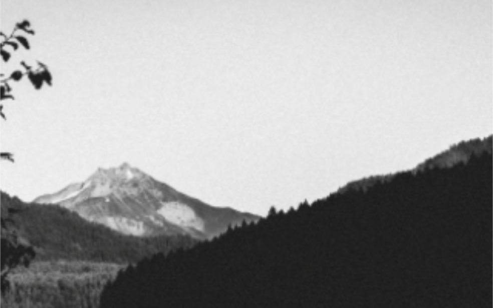

De Portland a Portland
Un viaje épico en bicicleta desde Portland, ME. a Portland, OR
TU VIAJE COMIENZA AQUÍ
Conoce un poco mejor el país en el que vives
Eso es exactamente lo que hemos organizado para ti a través de esta historia de viaje.
¿Necesita más acción y aventura en su vida en lugar de la misma rutina de siempre? De Portland, Maine a Portland, Oregon estamos lo llevará en un viaje emocionante a través de algunas regiones desconocidas de su país. Deja el coche en casa y viaja en bicicleta desde Nueva Inglaterra. donde todo comenzo. Pasarás por 12 hermosos estados, cubriendo un total de 3.600 millas, y cumplirás 3 misiones monumentales. De fiesta y tomarse una selfie con una famosa estrella de rock, donar $ 1 a un multimillonario para ayudar a erradicar la poliomielitis en África, e incluso visitar el famoso autor Stephen King's casa para saludar y pedirle que firme su libro favorito.
- Distancia (millas) 3,644
- Tiempo de viaje (días) 22
- Punto más alto (pies) 9,613
- Punto más bajo (pies) -3


Maine

Aún así, tan escasamente poblado como estaba en el siglo XVII, este es un estado extraordinario y altamente subestimado lleno de rica historia y majestuosa belleza natural. Maine es el estado principal que no debe perderse. Como su viaje va a ser largo, Será mejor que esté preparado para una ardua caminata.
Afortunadamente, Maine no solo es el hogar de los primeros colonos europeos en territorio estadounidense en la era de los vikingos, sino que también es el hogar de L.L. Bean, que es una gran compañía para tomar una mochila súper resistente para su expedición de 3 meses.
Costo promedio: $ 80-100.
New Hampshire
URL
timberland.com
No hay mejor lugar para perderse en la naturaleza que en la primavera de New Hampshire. Tan sereno y hermoso como eso Fue en la década de 1700, este estado todavía es mucho menos transitado que sus vecinos del sur. Así que disfrutalo mientras dura.
No estarás en tu bicicleta todo el tiempo, así que ¿no tiene sentido comprar un poco de calzado extra? Afortunadamente para usted, la mejor empresa de calzado para actividades al aire libre en la historia del mundo, proviene con orgullo de este estado. Pedalea por la sede de Timberland en Stratham, y elija un par de botas resistentes e impermeables para mantener los pies secos. Adecuado para un clima impredecible al que puede enfrentarse al pasar los Apalaches. Estas botas también son mejores que las zapatillas de ciclismo al montar una carpa.
Costo promedio: $ 100-150.
New York
URL
ge.comEl estado de Nueva York no solo es famoso por "La Gran Manzana", sino que también tiene otras razones para pasar a la historia. Desde finales Schenectady de 1800, "La ciudad que ilumina y arrastra al mundo", ha sido el hogar de la mundialmente famosa General Electric Company.
Aquí es donde nacieron los generadores de energía modernos, así como los medios contemporáneos de transmisión de energía. Así que pensamos este sería el lugar perfecto para encontrar una luz de dínamo sin batería para su bicicleta que lo ayude a ver a través de esos oscuros caminos solitarios en su aventura. Tal luz de GE le costará alrededor de $ 10-20.
Erie, PA
URL
fws.gov
Erie, Pensilvania, que no debe confundirse con la palabra "misterioso", aunque puede serlo de vez en cuando, es otra ciudad vale la pena pasar por varias razones diferentes. Si bien podría ser más conocido como el escenario del discurso de Gettysburg pronunciado por Lincoln durante la Guerra Civil, Pensilvania también ha producido una comunidad amish de tamaño bastante decente (inquietante, ¿eh?)
La razón por la que te traemos aquí hoy, si aún no lo has adivinado, se puede resumir usando un delicioso palabra: chocolate. Hershey's es una empresa con sede en Pensilvania. Probablemente, una de las misiones más sabrosas en las que te embarcarás durante esta gira, Intenta encontrar un amigo Amish y disfruta de un bar en el Refugio Nacional de Vida Silvestre de camino a Erie y ¡diviértete más!
El costo actual de una barra de chocolate Hershey's: alrededor de 60 ¢.
Ohio
URL
cedarpoint.com
Desde la capital universitaria de Columbus hasta la limpia costa de Cleveland, Ohio es una joya verdaderamente escondida. Temblores son sorprendentemente comunes en esta región particular de América del Norte, más de 200 de los cuales se han registrado con una magnitud de 2 o más desde 1776. Sin embargo, los terremotos no son lo único que sacude a este estado céntrico. Una de las montañas rusas más grandes y antiguas del país. ¡los parques están esperando para OSCILAR tu mundo en Sandusky, Ohio! Esta será probablemente una de las misiones más emocionantes que jamás completarás. (siempre que pueda soportarlo). ¡Tómate un merecido descanso para montar en tantas montañas rusas como puedas antes de continuar tu paseo en bicicleta!
El costo de un boleto diario: alrededor de $ 100.
Ruta histórica 66
La calle principal de América de Santa Mónica, Cal. a Chicago, Ill.